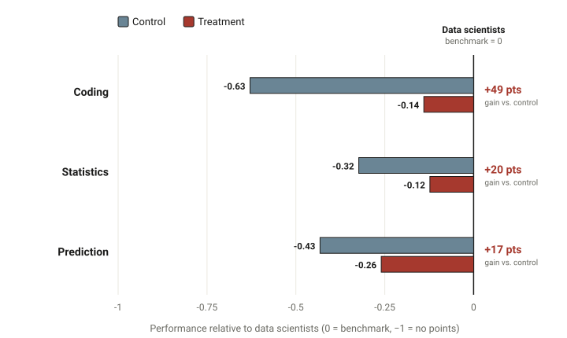
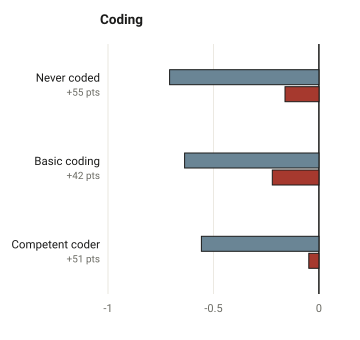
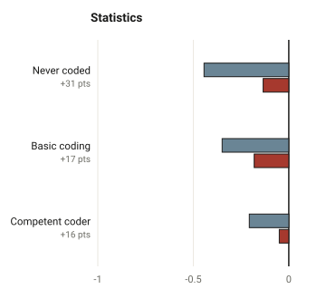
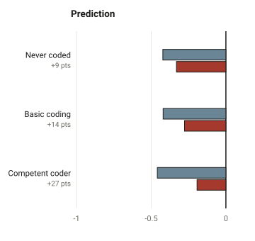
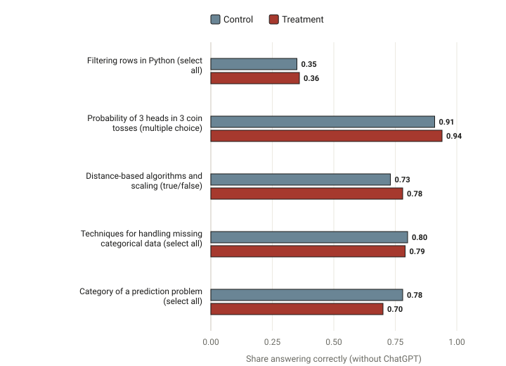
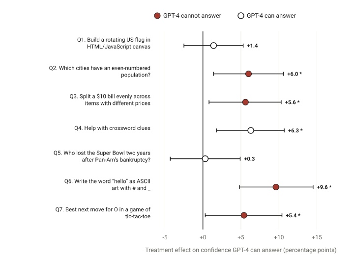

Generative AI as a Temporary Exoskeleton for Upskilling Knowledge Workers
Emma Wiles1
Lisa Krayer2
Mohamed Abbadi2
Urvi Awasthi2
Ryan Kennedy2
Pamela Mishkin3
Daniel Sack2
Francois Candelon2
1 Boston University, Boston, MA
2 BCG, Boston, MA
3 Economic Impacts Research, OpenAI, San Francisco, CA
Consultants given access to and training in ChatGPT performed substantially better on
unfamiliar data-science tasks. But the gains worked like an exoskeleton: the technology
expanded what these skilled professionals could do while they used it, and once it was
removed, we found no corresponding improvement in their own technical knowledge.
+49ppCoding
+20ppStatistics
+17ppPrediction
Improvement of the AI-trained group over the control group on three unfamiliar tasks,
in percentage points (pp). Scores are measured against a benchmark set by professional data scientists.
AI can temporarily expand workers’ capabilities, but using AI to perform new tasks is not
the same thing as learning the underlying skills.
We conducted a randomized experiment involving 986 consultants at Boston Consulting
Group (BCG), a global management consulting firm. The study asks a specific question: can generative AI
help knowledge workers take on technical work that is normally outside their skill set—and if it
can, does that experience leave them with lasting skills? The paper is forthcoming in
Nature Human Behaviour.
The results turn on a distinction the paper draws carefully:
AI-enabled task capability
What a worker can accomplish while using the technology. In this study, AI clearly
expanded it: treated workers completed unfamiliar data-science tasks far better than the control group.
Durable, independent knowledge
What a worker knows and can apply when the technology is unavailable. Here, immediately
after the experiment and without ChatGPT, we found no evidence that the treated group knew more than the control group.
These are not meant as universal, mutually exclusive categories. The point is narrower and empirical:
in this setting we see strong evidence of the first, and no evidence of a short-run improvement in the second.
The paper uses the analogy of an exoskeleton: the technology can expand what someone is
able to do while using it, even if the underlying capability does not persist when the technology is removed.
The Study
How the experiment worked
A randomized experiment assigns people to groups by chance, so that differences in
outcomes can be attributed to the treatment rather than to who happened to be in each group.
1
986 consultants entered the experiment — skilled knowledge workers whose expertise is in analysis and problem-solving, most of whom reported little or no prior coding experience.
2
Each participant was randomly assigned to a treatment or a control condition.
3
The treatment group received access to and a short training in ChatGPT (GPT-4).
4
The control group received a short training in conventional online resources (Google, Stack Overflow, Khan Academy).
5
Each participant attempted two of three unfamiliar 90-minute data-science tasks.
6
Performance was scored against a benchmark set by 44 BCG data scientists who did the tasks without AI.
7
Everyone answered post-experiment technical questions without ChatGPT.
Of the 986 randomized, 573 began the survey and 487 submitted gradable output for both tasks — the main
analysis sample. The number of participants differs by task (coding 300, statistics 330, prediction 298),
so not every participant appears in every estimate.
The three tasks
Each task was built by BCG data scientists with OpenAI’s Economic Impacts Research team, and
deliberately designed so that GPT-4 could not simply solve it on its own — correct answers required human input at multiple steps.
Coding
Write Python to clean, merge, and filter two messy datasets and compute a result.
Learn more
Participants worked in Google Colab and were guided to read the data, split combined string
fields, handle types, detect and remove junk and null values, join the tables, and compute a
metric. Because almost no one reached a fully correct answer in 90 minutes, the primary score is
the share of ten defined steps completed correctly, graded against a rubric.
Statistical understanding
Fact-check AI’s statistical recommendations and interpret model output.
Learn more
Participants reviewed a flawed analysis plan for a mortgage-prediction model, interpreted
residual plots, applied statistical metrics, and computed a situational probability. Answers mixed
multiple-choice and open-ended responses, graded against a rubric with complexity weights set by
senior data scientists. Free-response items were graded with a validated GPT-4 pipeline.
Prediction
Build a predictive model from historical football-match data and assess its reliability.
Learn more
This open-ended task asked participants to quantify how predictable each match was and to
identify the most surprising result. Because there is no single ground truth, each submission was
scored by its distance from the data scientists’ own answers (minimum absolute error,
reported so that 0 equals the benchmark and −1 means no agreement).
Findings
Five findings
A note on the benchmark: scores are normalized so that 0 is the average of the
44 data scientists. Negative numbers mean below that benchmark; the treatment effect is the gap
between the treatment and control groups. A 95% confidence interval is the range that
would contain the true effect in 95% of repeated experiments — when it excludes 0, the effect is
statistically significant.
1
AI substantially improved performance on unfamiliar technical work
Treated workers scored well above the control group on all three tasks:
+49 (coding), +20 (statistics), and +17 (prediction)
percentage points.

Figure 1. Performance relative to data scientists (0 = benchmark).
Bars show group means; the treatment effect is the gap between them.
How to read this & exact estimates
Zero is the data-scientist average. Because scores are normalized this way, both groups sit
below zero on every task; treatment moves the group closer to the benchmark. The coding outcome is
the share of correct steps, statistics is the weighted share of points, and prediction is
−1×mean absolute error from the benchmark answers.
Treatment effect (treatment minus control), Huber–White robust standard errors.
Task
Control
Treatment
Effect
95% CI
N
Coding
−0.63
−0.14
+0.49
[0.42, 0.56]
300
Statistics
−0.32
−0.12
+0.20
[0.15, 0.25]
330
Prediction
−0.43
−0.26
+0.17
[0.09, 0.25]
298
Source: Paper Figure 1 & Section 2.1. Reproduced from computed_objects/experimental_data.csv.
Sample: participants who submitted work for each task.
2
Better performance did not, overall, close the gap with experts
Treated workers narrowed the distance to the data-scientist benchmark
substantially, but on average they remained measurably below it on all three tasks —
we can statistically reject that they performed as well as the data scientists.
In Figure 1, the treatment bars are much closer to zero than the control bars, yet
they do not reach it. The treated group averaged 14 points below the benchmark on coding, 12 below on
statistics, and sat at −0.26 on prediction. AI made these consultants far more capable on
unfamiliar technical work; it did not turn them into data scientists.
Which gaps are statistically significant?
For all three tasks the 95% confidence interval for the treated group’s distance from the
benchmark excludes zero, so we reject equality with the data scientists overall. That the groups
differ statistically does not mean the gap is large in every case — on statistics it is about
12 points — but the evidence points to a remaining gap, not to parity.
Source: Paper Figure 1 & Section 2.1–2.2.
3
Existing foundational knowledge still mattered
Among treated workers, those who already had prior coding experience came
closest to the benchmark. On coding and statistics, we could not reject that competent coders in the
treatment group performed as well as the data scientists.



Figure 2. Effect by self-reported prior coding experience, relative to data
scientists (0). Each panel is one task; bars are group means.
Careful wording matters here: among participants with stronger prior coding experience, we could
not reject equal performance with the data-scientist benchmark on coding and statistics. Failing
to reject equality is not the same as proving it — but here the evidence leans toward similarity
(see the Bayes factors below). This is an observed pattern by experience level; the experiment does
not establish that prior coding caused the larger benefit.
Competent coders: exact estimates & Bayes factors
A Bayes factor below 1 quantifies evidence for the null hypothesis of no
difference. For competent coders versus the benchmark, the Bayes factors were 0.25 (coding) and 0.37
(statistics) — evidence favoring similarity, not merely an inability to detect a difference.
Competent coders (treatment group), relative to the data-scientist benchmark.
Task
Treatment level
Effect vs. control
95% CI
vs. benchmark
Coding
−0.05
+0.51
[0.38, 0.64]
not rejected (BF 0.25)
Statistics
−0.05
+0.16
[0.08, 0.23]
not rejected (BF 0.37)
Prediction
−0.19
+0.27
[0.13, 0.40]
still below benchmark
Category labels are the paper’s: Never coded, Basic coding, and
Competent coder. Per-person counts by category: never coded 146, basic 172, competent 168.
Source: Paper Figure 2 & Section 2.2. Reproduced from computed_objects/experimental_data.csv (know_code).
4
Improved performance did not become better unaided knowledge
We found no evidence of improved unaided technical knowledge immediately after
the experiment. On five technical questions answered without ChatGPT, the treatment and control
groups performed essentially the same.

Figure 3. Share answering each post-experiment question correctly, without ChatGPT.
A joint test finds no treatment effect: F(5, 198) = 0.83, p = 0.531.
Both groups answered these questions on their own, after the tasks were over. The individual
differences were small (from −7.7 to +4.8 percentage points) and none was statistically
significant. This does not mean participants learned nothing, that no individual learned
anything, or that AI prevents learning — only that, in this setting and measured immediately,
the treatment produced no detectable gain in independent knowledge.
Question-by-question estimates & Bayes factors
Share correct by group; treatment effect in percentage points (pp).
Question
Control
Treatment
Effect (pp)
p
Bayes factor
Filtering rows in Python
0.35
0.36
+0.8
0.83
0.10
Probability of 3 heads in 3 tosses
0.91
0.94
+2.7
0.32
0.18
Distance-based algorithms & scaling
0.73
0.78
+4.8
0.075
0.50
Handling missing categorical data
0.80
0.79
−0.6
0.90
0.13
Category of a prediction problem
0.78
0.70
−7.7
0.057
0.62
Bayes factors below 1 give moderate evidence for the null of no difference. The joint
test across all five questions is not significant.
Source: Paper Figure 3, Section 2.3 & Appendix Table B14 (writeup/tables/learning.tex).
Reproduced from data/complete_data_all.dta. Sample size varies by question (253–573).
5
Experience with ChatGPT did not improve judgment about its limits
Successful AI use did not make participants better judges of where the technology would
fail. After the experiment, treated workers were more confident that GPT-4 could solve problems
it actually cannot — and so less accurate than the control group.

Figure 4. Treatment effect on stated confidence (in percentage points) that GPT-4 can
answer each question, measured after the experiment. * marks statistically significant effects (p < 0.05).
Before and after the experiment, workers estimated how likely GPT-4 was to answer each of several
problems correctly — this is forecasting accuracy, not a self-report of
confidence in themselves. After using and training with ChatGPT, treated participants were less
accurate than the control group at identifying which problems GPT-4 could solve reliably: for every
question the model cannot answer, they became significantly more sure that it could. This
analysis was exploratory and not pre-registered.
Exact estimates for all seven questions
Treatment effect on confidence (0–100) that GPT-4 can answer; positive = more confident.
Question
GPT-4
Effect (pp)
95% CI
p
Rotating US flag in HTML/JS
can
+1.4
[−2.5, 5.3]
0.48
Cities with even-numbered population
cannot
+6.0
[1.4, 10.6]
0.012
Split a $10 bill across items
cannot
+5.6
[0.8, 10.3]
0.024
Help with crossword clues
can
+6.3
[1.8, 10.7]
0.007
Multi-step Super Bowl lookup
can
+0.3
[−4.3, 4.9]
0.90
Write “hello” as ASCII art
cannot
+9.6
[4.8, 14.5]
<0.001
Best next move in tic-tac-toe
cannot
+5.4
[0.3, 10.4]
0.039
Control-group base rates ran 65–78%. Because higher confidence on a “cannot”
question means worse calibration, the positive effects on those four questions indicate the
treated group misjudged the model’s limits.
Source: Paper Figure 4, Section 2.4 & Appendix Table B8 (writeup/callibration.tex). Exploratory; not pre-registered.
Implications for Workers
Implications for Workers
Many readers of this study are consultants and other knowledge workers
weighing how to build new skills. Three ideas follow directly from the findings.
Using AI to do new work is not the same as gaining a portable skill
It is worth separating two outcomes: becoming more capable while using a particular tool,
and developing knowledge that stays useful without it. This study saw the first clearly and no
sign of the second in the short run. That does not make AI-enabled capability unimportant — it can
be genuinely valuable and productive. It is simply a different outcome from independent skill acquisition,
and worth naming as such when you plan your own development.
Existing foundational knowledge still matters
The treated workers who came closest to the expert benchmark were those who already had some coding
experience. In this setting, foundational knowledge and AI assistance appear to complement
one another. This is not a claim that formal coding education is always necessary — but a base of
relevant knowledge helped people get the most out of the tool.
Knowing how to use AI does not guarantee knowing when it will fail
Completing tasks successfully with ChatGPT did not make participants better at predicting where it
would break down — if anything, the opposite. Fluency with a tool and accurate judgment about its
limits are separate capabilities, and one does not automatically produce the other.
Implications for Organizations
Implications for Organizations
Organizations should specify what they expect an upskilling program to produce: improved performance
with AI, independent technical knowledge, or both.
AI-supported capability
AI-supported capability may be valuable when employees will retain stable, approved access to the
tool and the relevant work can be performed using it. In the experiment, that capability was large and
real — consultants took on work normally reserved for data scientists.
Independent capability
Organizations should not infer independent technical knowledge solely from successful AI-assisted
task completion. That distinction matters most when workers must work without the tool, handle data
that cannot be shared with it, validate outputs on their own, or transfer their skills to another
technical environment. The experiment did not test each of these situations directly, but its central
result — capability with the tool did not become knowledge without it — bears on all of them.
Judgment and oversight
Successful task completion is not evidence that workers accurately understand the model’s
limitations; here, the more experienced group misjudged them more. Where the cost of an undetected
error is high, it can help to evaluate task performance and judgment about the
model separately, and to keep someone with deeper expertise in the loop to review AI-assisted work.
In the Media
Coverage & commentary
Selected writing that discusses the study and its exoskeleton framing.
Each link opens on the publisher’s site.
Generative AI and the Temporary Upskilling of Knowledge Workers
Emma Wiles, Lisa Krayer, Mohamed Abbadi, Urvi Awasthi, Ryan Kennedy,
Pamela Mishkin, Daniel Sack & Francois Candelon
Boston University · BCG · OpenAI (Economic Impacts Research)
Forthcoming in Nature Human Behaviour.
Upskilling refers to workers acquiring and expanding their skills to perform different kinds of work as
demand changes. In a randomized controlled trial, BCG consultants were given access to and training in
ChatGPT to attempt data-science tasks outside their skill sets — tasks ChatGPT cannot solve on its
own. Treated workers scored higher than the control group on all three tasks, though we can reject that
they matched expert data scientists overall. We find no evidence that treated workers were better at
answering technical questions without ChatGPT afterward, suggesting their demonstrated capabilities did
not imply knowledge acquisition; treated workers also became more overconfident in ChatGPT’s
abilities. The paper frames generative AI as a temporary “exoskeleton” that augments what
workers can do while it is in use.
Wiles, E., Krayer, L., Abbadi, M., Awasthi, U., Kennedy, R., Mishkin, P., Sack, D., & Candelon, F.
(forthcoming). Generative AI and the Temporary Upskilling of Knowledge Workers.
Nature Human Behaviour.
Final publication year, volume, and DOI are pending; see the paper for the
authoritative citation.
Data & code. The analysis code is public in the
repository. The underlying participant data
are available from the authors on request for non-commercial academic review, subject to a
data-usage agreement.
Acknowledgements. The authors thank BCG and the BCG Henderson Institute for
facilitating the experiment and the participant pool, the BCG data scientists who served as the
benchmark, and OpenAI’s Economic Impacts Research team for collaboration on task design.
Competing interests: several authors are or were employees of BCG or OpenAI; E. Wiles
was a paid BCG consultant during the experiment.